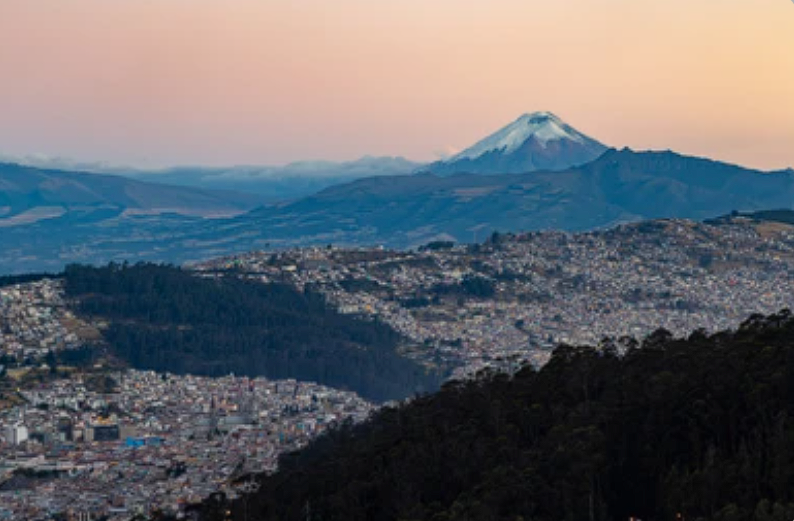
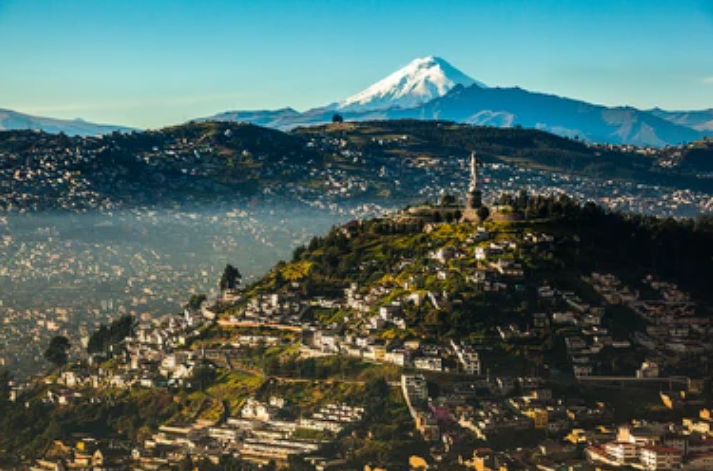

Pichincha
¿Porqué visitarlo?
Desde su capital, Quito, declarada Patrimonio de la Humanidad por la UNESCO, hasta sus encantadores pueblos y majestuosos paisajes montañosos, Pichincha ofrece un viaje inolvidable. Explorar el Centro Histórico de Quito es sumergirse en la riqueza histórica, con iglesias coloniales, plazas empedradas y callejones llenos de vida. En las afueras de la ciudad, el majestuoso volcán Cotopaxi domina el horizonte, ofreciendo la oportunidad de aventurarse en sus faldas o disfrutar de las vistas panorámicas. La provincia también alberga el Teleférico de Quito, que lleva a los visitantes a las alturas para contemplar una panorámica espectacular de la ciudad y sus alrededores. Pichincha es un destino que combina historia, naturaleza y aventura, creando una experiencia turística única en el corazón de Ecuador.

Razones para visitar Pichincha
Cultura Histórica: Explora el rico patrimonio colonial de Quito, con calles empedradas, iglesias centenarias y arquitectura impresionante.
Aventura en Altura: Desafía tus límites en las alturas del Teleférico de Quito, con vistas panorámicas a la ciudad y a los majestuosos Andes.
Naturaleza Exuberante: Sumérgete en la biodiversidad de Mindo, con su selva tropical, cascadas impresionantes y una variedad de actividades al aire libre.
Mercados Coloridos: Descubre la autenticidad en los mercados artesanales de Quito, como La Mariscal, llenos de productos locales y coloridos.
Gastronomía Exquisita: Deléitate con la diversidad gastronómica de la región, desde platos tradicionales hasta propuestas culinarias innovadoras.
Folklore y Tradiciones: Sumérgete en las festividades y tradiciones locales que reflejan la identidad cultural y la herencia indígena de la provincia.
